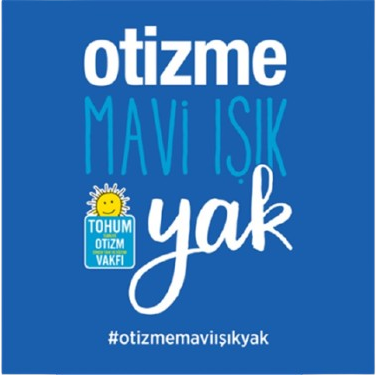
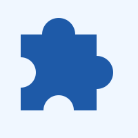
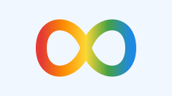

2 Nisan nasıl bir gün oldu?
Dünya Otizm Farkındalık Günü, Birleşmiş Milletler (BM) tarafından ilan edilmiş resmi bir gündür. Amaç, otizmli bireylerin haklarına dikkat çekmek ve toplumda daha fazla kabul görmelerini sağlamaktır.
Kısa tarihçe
- 18 Aralık 2007: BM Genel Kurulu aldığı kararla 2 Nisan'ı Dünya Otizm Farkındalık Günü olarak ilan etti.
- 2 Nisan 2008: Gün ilk kez kutlandı.
- 2010: "Light It Up Blue" (Maviyle Aydınlat) kampanyası başladı. Dünyanın birçok yerinde ünlü binalar mavi ışıkla aydınlatılmaya başlandı.
- Bugün: Okullar, dernekler ve belediyeler her yıl bu günde ve çevresinde etkinlikler düzenliyor. Türkiye'de de bu etkinlikler yapılıyor.
Günün simgeleri
Bu günle ilgili üç simge sık kullanılıyor. Hepsinin anlamı biraz farklı.

Mavi ışık
Kampanyanın rengi mavidir. Bu yüzden 2 Nisan'da bazı insanlar mavi giyer, bazı binalar mavi yanar.

Puzzle parçası
Otizmin karmaşık yapısını anlatmak için yıllardır kullanılıyor. İlk olarak 1963'te İngiltere'de bir otizm derneğinin logosunda yer aldı.

Sonsuzluk işareti
Renkli sonsuzluk işareti, insanların farklı düşünme biçimlerini ve çeşitliliği temsil ediyor. Birçok otizmli birey bu simgeyi daha çok seviyor.
Araştırırken bazı otizmli bireylerin puzzle simgesini sevmediğini öğrendim. Çünkü onlar kendilerini "eksik bir parça" gibi görmek istemiyorlar. Bu yüzden hangi simgenin kullanılacağı konusunda otizmli bireylerin fikri de önemlidir.
Farkındalık sadece bir gün için değil, her gün için gereklidir.